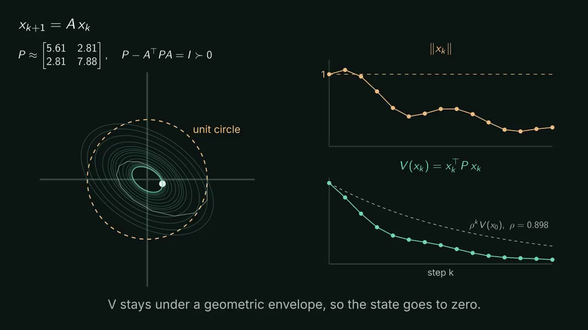

Each page takes one machine-checked theorem, states it carefully, shows why it holds, works a small and a larger example, and says where it might apply and where it stops.

The discrete-time Lyapunov theorem for x(k+1) = A x(k). What it assumes, why it holds, a small and a larger worked example, and where it shows up in sampled-data control and estimation.